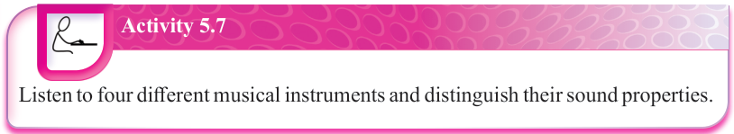

(b) Dynamics: This determines how strong a sound is. It is the degree of loudness or softness in music. Loudness is related to the amplitude of the vibrations that produces the sound, whereby larger vibrations result in louder sound. For example, whispering is quieter while shouting is louder. Another example is that the harder a piano key is pressed, the louder its sound. A dynamic change happens when instruments are played more loudly or softly. Such a change may be made either suddenly or gradually. A gradual increase in loudness often creates excitement, particularly when the pitch rises too. On the other hand, a gradual decrease in loudness can create a sense of calm.
(c) Timbre or tone colour: This refers to the unique tone of an instrument or voice. For example, we can tell the difference between a piano and a guitar even when they are played in the same note at the same dynamic level. The quality that distinguishes them is their tone colours (timbre). Composers often create a melody with a particular tone colour of an instrument.
(d) Duration: It refers to how long or short a sound lasts. In music, notes can be held for a short or long time. For example, a piano key tapped quickly makes a short sound while a violin makes a long sound when bowed slowly. Several factors can affect the duration of a sound. These include:
- (i) How an instrument is played; for example, a drummer can hit the drum quickly to create a short sound or let the sound ring for longer time.
- (ii) The material of the object; for example, a metal bell rings longer than a wooden block.
- (iii) The environment; for example, sounds produced in a big hall last longer because of echo and reverb.

Activity 5.7
Listen to four different musical instruments and distinguish their sound properties.
Sources of musical sounds
(a) Natural sources: For example, birdsongs whereby many birds create musical patterns; wind and water whereby whistling wind or flowing rivers produce sound.